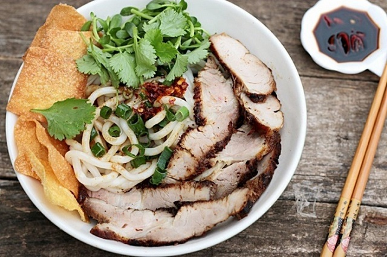

500 gram thịt đùi heo,500 gram xương ống heo
1kg mì Cao lầu tươi,hành lá, tỏi, ngò ri
Gia vị: Muối, nước mắm, hạt nêm, hạt tiêu, nước tương, tương ớt, dầu ăn…
Rau sống ăn kèm: Bắp chuối, rau thơm, giá đỗ, rau húng…
Nguyên Liệu Làm Cao Lầu:
Cách Nấu:
- Thịt heo sau khi mua về, bạn đem rửa sạch rồi chia thành 2 khổ lớn, xương heo rửa sạch, chần sơ qua với nước sôi để loại bỏ bớt chất bẩn và mùi hôi.
- Tỏi bỏ vỏ khô, dùng dao băm nhỏ. Hành lá, ngò bỏ rễ, rửa sạch rồi thái nhỏ.
- Các loại rau sống ăn kèm bạn trộn đều với nhau, đem ngâm với nước muối loãng trong chừng 10 – 15 rồi rồi rửa sạch lại nước lạnh và vớt ra rổ để ráo.
1.Sơ chế nguyên liệu:
- Bước 1: Cho 500 gram xương heo đã được sơ chế vào nồi rồi đổ một lượng nước vừa phải vào ninh với lửa nhỏ trong khoảng 30 phút. Sau đó, lấy khoảng 500ml nước dùng trong nồi để dùng.
- Bước 2 :Đem 2 khổ thịt heo lớn ướp với lượng gia vị như sau: 1/2 thìa cà phê ngũ vị hương, 4 thìa súp nước tương, 1 thìa cà phê tỏi băm, 1 thìa cà phê hạt tiêu, + 4 thìa súp đường và 2 thìa cà phê hạt nêm. Để trong khoảng 30 phút cho thịt heo thấm đều được gia vị.
- Bước 3: Cho 2 muỗng canh dầu ăn vào một chiếc chảo rộng rồi bắc lên bếp đun sôi. Sau đó, cho 2 khổ thịt heo lớn đã được ướp đủ thời gian vào chiên vàng đều. Lưu ý: Khi chiên, vì thớ thịt lớn nên bạn hãy để ở mức lửa nhỏ để thịt có thể chín đều từ trong ra ngoài nhé.
- Bước 4: Tiếp tục đổ phần nước ướp thịt heo lúc trước vào chảo và rim cho đến khi phần nước này cạn. Sau đó, cho thêm 500ml nước dùng vào đun với mức lửa nhỏ trong khoảng 40 phút.
- Bước 5: Nêm nếm nước dùng vừa miệng rồi tắt bếp, vớt thịt ra để ráo và đợi nguội. Sau đó, dùng dao sắc thái thịt thành những miếng vừa ăn.